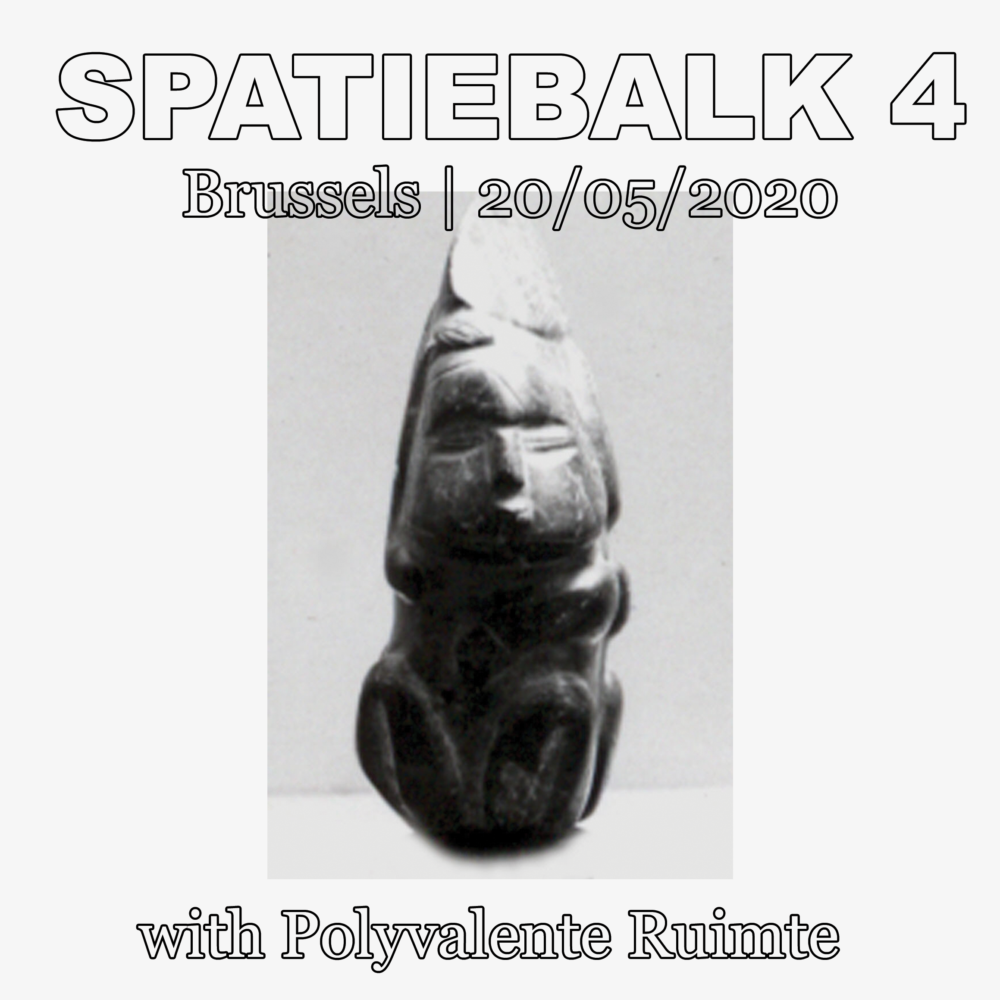
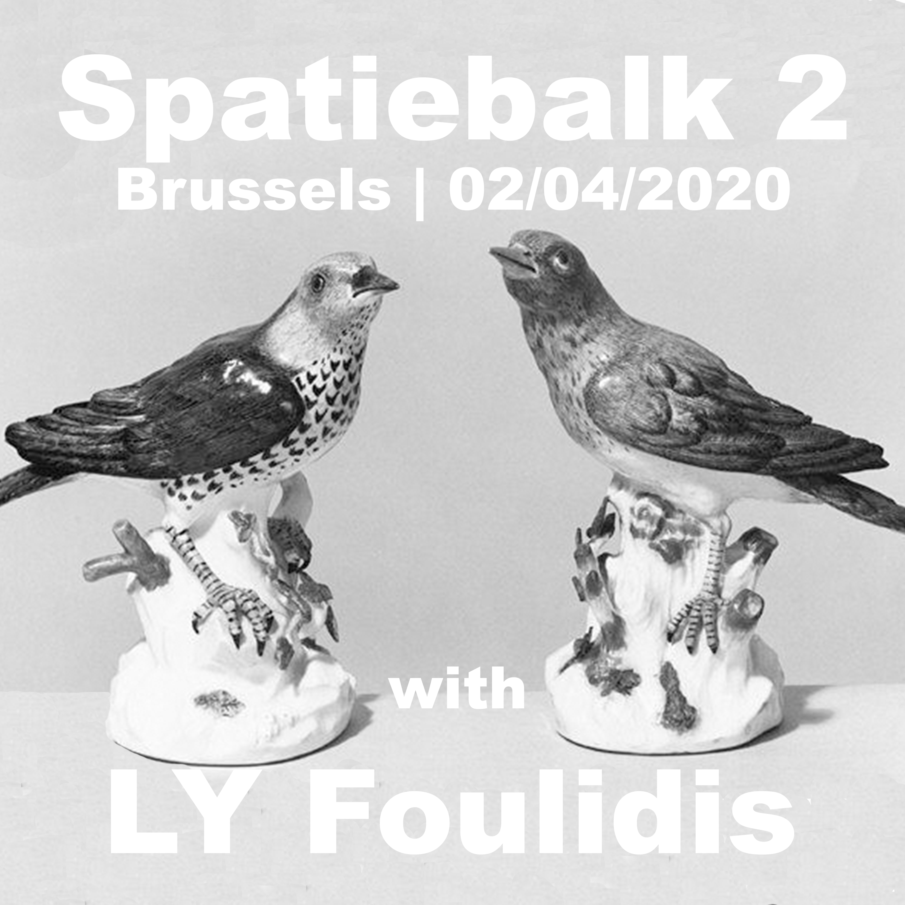
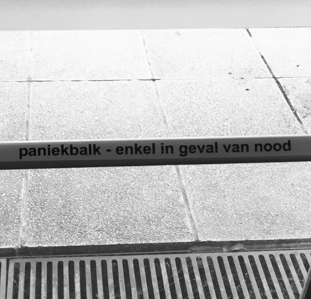

New radio show with friends and associates each month or so
Monday, September 21, 2020
with LY Foulidis

- No Tracklist Provided
-
/\/\/\/\/\/\/\/\/\/\/\/\/\/\/\/\/\/\/\/\/\/\/\/\
Wednesday, May 20, 2020
with Polyvalente Ruimte
- No Tracklist Provided
-
/\/\/\/\/\/\/\/\/\/\/\/\/\/\/\/\/\/\/\/\/\/\/\/\
Thursday, April 16, 2020
with LY Almere

- Tracklist
-
- Ana Roxanne - Slowness
- Green House – Parlor Palm
- Anthony Naples – Alto
- Lorad Group - Lavoro Quotidiano
- Dang Olsen Dream Tape – Hi Breath
- Transmuteo - Zone Temple
- Marco Sterk – Temple on a road
- Jonny Nash – Ding Repair
- Jon Appleton & Don Cherry – DON
- Nico – Camera Obscura
- Tkil – Etka (Excerpt)
- Lithops - Uni Umit 1
- Mist – La Résistance Individuelle (Part 1)
- Imaginary Softwoods – Coconut Seranade
/\/\/\/\/\/\/\/\/\/\/\/\/\/\/\/\/\/\/\/\/\/\/\/\
Thursday, April 02, 2020
with LY Foulidis
- Tracklist
-
- Electric Capablanca - Maroczy Bind
- X.Y.R - Deep Diver
- Unknown Mirrors - New Green
- Pierre Bastien - Rail at a Liar
- Dead Can Dance - Windfall
- Stan Tracey Quartet - Starless And Bible Black
- Linus Vandewolken - Jagers in de sneeuw
- Bitchin Bajas and Natural Information Society - Anemometer
- Waclaw Zimpel - Sine Tapes
- Minae Minae - Vertilger
- Phantom Horse - Vloid
- Pittsburgh Modular - Voltage Lab Explorer Soundtrack 1
- Kilchhofer - Tusk
- Mark Vernon - The object invoked
has disconnected from it's host - Hendrik Lasure warm bad - Mountains And Woods
- Visible Cloaks - Painter_Stream
- Kate NV - OAK
- Yialmelic Frequencies - Play Ponds
- Luke Abbott & Jack Wyllie - Etxeberri
/\/\/\/\/\/\/\/\/\/\/\/\/\/\/\/\/\/\/\/\/\/\/\/\
Wednesday, March 18, 2020
with Almere
- Tracklist
-
- Sendai Threnody - Monty Adkins
- Orion Molecular Cloud - Ben Bertrand
- If Anything Is (II) - Britton Powell
- One Bee - Clarice Jensen
- Der Sterbende auf der Brücke - Jürgen Knieper
- Moments - Steven Brown & Benjamin Lew
- Blink - Sonic Youth
- Track3a(2waynice) - Keith Fullerton Whitman
- La Maison des 5 éléments - Dominique Lawalrée
- Titre - Amelia Tabeï
- Chant IV - Face A (Excerpt) - Golem Mechanique
- Path 5 (Delta) - Max Richter